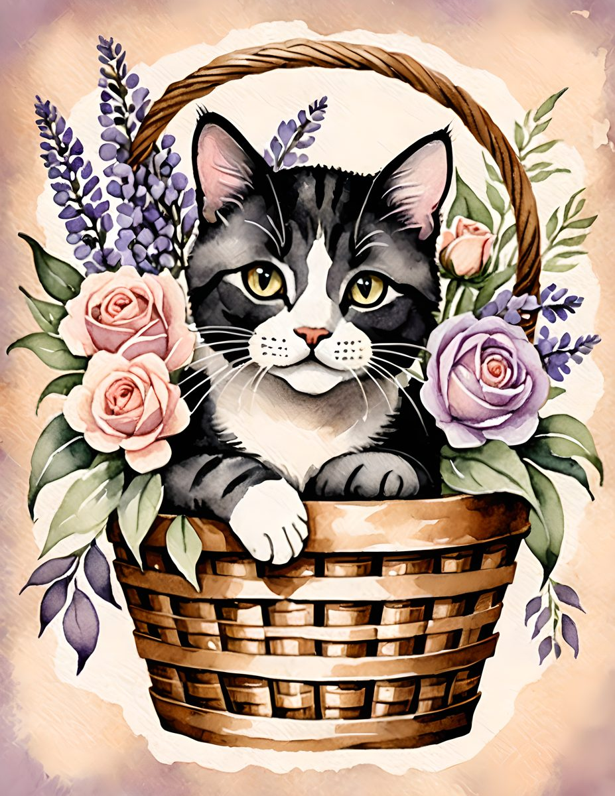
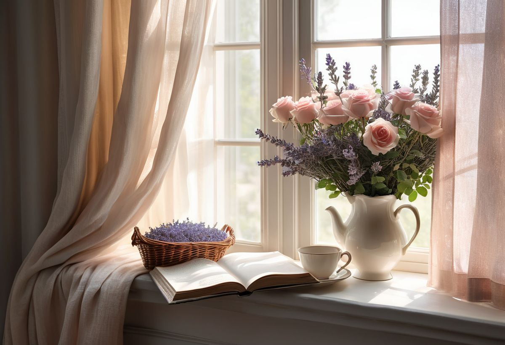
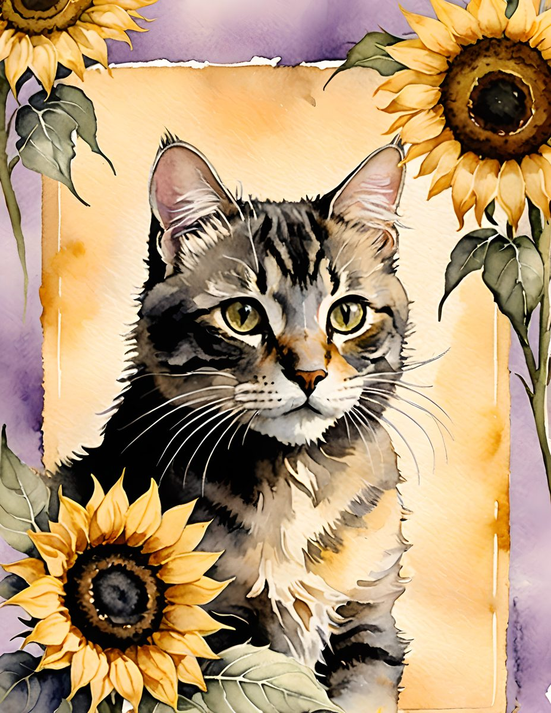
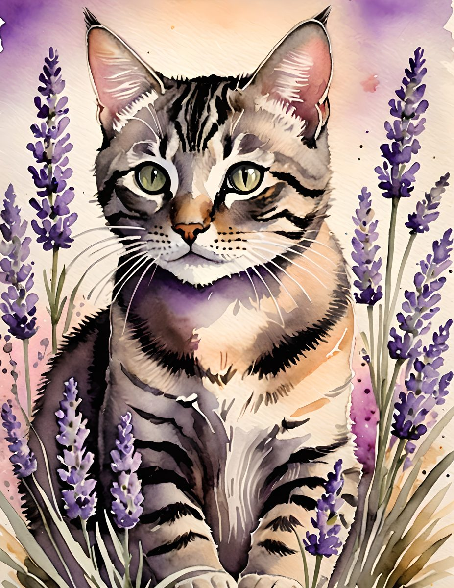
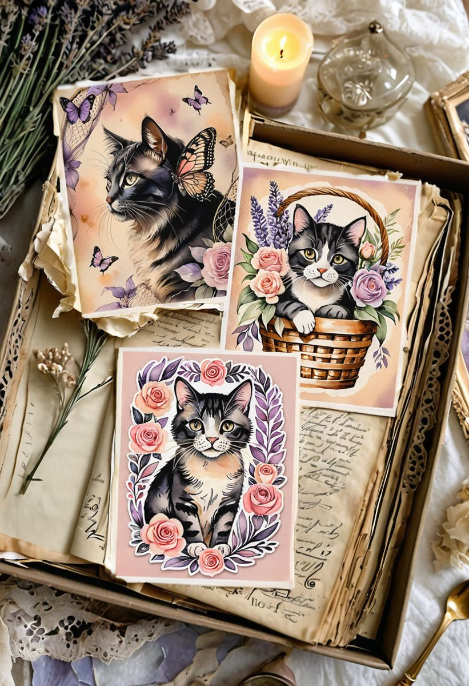
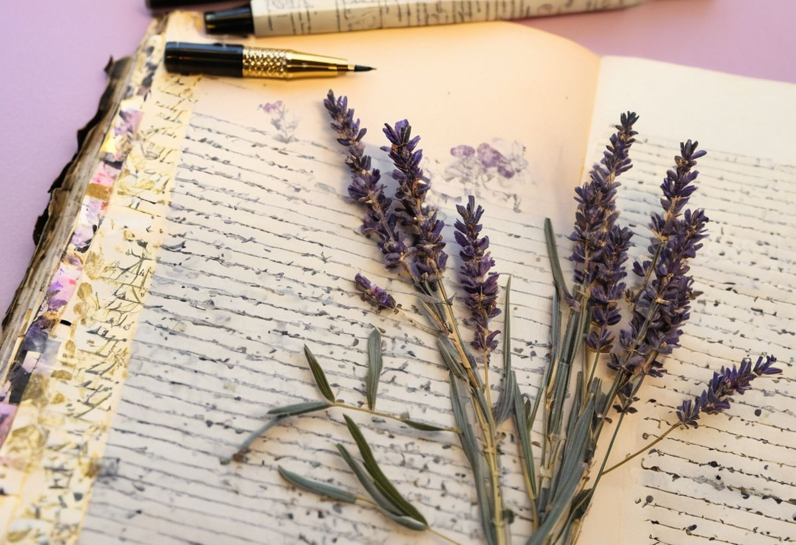

There is a particular kind of journal keeper: the one whose tea goes cold because a cat chose their lap at the wrong moment, and who wouldn't dream of moving. This theme is for you.



Whisker Bloom is painted in the softest register we work in — watercolor cats with serious little faces, tucked into wicker baskets among blush roses and lavender. It sits somewhere between a Victorian flower catalogue and a nap in a sunny window, and it turns a plain page into somewhere you want to stay.
The palette: fur, petals, and dusk

Three ways to wear this aesthetic
1. Let one cat own each spread. These portraits are focal images — give each its full page and build the layers around it: torn blush paper, a sage border, one line about a cat you have loved.

2. Pair it with real lavender. A pressed sprig under washi tape beside a painted one is the small rhyme that makes a page feel finished.

3. Keep the ink charcoal, not black. Pure black fights the soft washes; charcoal or sepia keeps your words inside the same gentle world. And for the cat people in your life — these pages fold into cards and gift tags without losing their charm.

All of it comes from one collection:
Here is how the printed pages settle into a real journal:

Begin in the quietest hour
This is not a loud theme and it does not want a loud evening. Print a few pages, make the tea that will inevitably go cold, and let the first spread be slow.

More gentle themes are gathered in the journal — the kettle is always on.